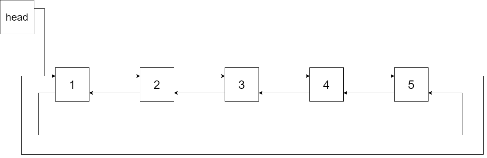
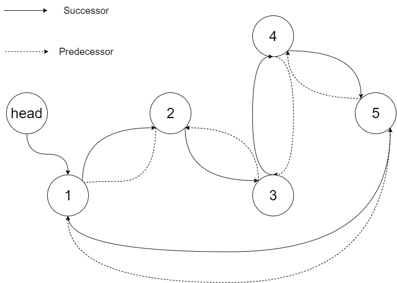

剑指 Offer 36. 将二叉搜索树转化为排序的双向链表
BST 中序递归：访问 cur 时和上一个访问的 last 互连前驱后继，最后首尾连成环，返回最左结点。
思路
- 中序遍历 BST 得到升序序列：维护
last（上一个访问的结点），访问cur时last.right = cur、cur.left = last。 - 第一个（最左）访问的结点没有前驱，记为表头
first，也是最终返回值。 - 遍历完后
last是最大结点：last.right = first、first.left = last首尾成环。
图解
最优解
1/*2// Definition for a Node.3class Node {4 public int val;5 public Node left;6 public Node right;7 8 public Node() {}9 10 public Node(int _val) {11 val = _val;12 }13 14 public Node(int _val,Node _left,Node _right) {15 val = _val;16 left = _left;17 right = _right;18 }19};20*/21class Solution {22 // first：最左结点，链表表头；last：上一个访问的结点23 private Node first, last;24 25 public Node treeToDoublyList(Node root) {26 if (root == null) return null;27 first = last = null;28 inorder(root);29 // 遍历完 last 是最大结点：首尾相连成环30 last.right = first;31 first.left = last;32 return first;33 }34 35 // 中序遍历：访问 cur 时，它的前驱就是 last36 private void inorder(Node cur) {37 if (cur == null) return;38 inorder(cur.left);39 // last 为空说明 cur 最左，记为表头40 if (last == null) first = cur;41 // 否则接到 last 后面，双向互连42 else { last.right = cur; cur.left = last; }43 last = cur;44 inorder(cur.right);45 }46}题目
将一个 二叉搜索树 就地转化为一个 已排序的双向循环链表 。
对于双向循环列表，你可以将左右孩子指针作为双向循环链表的前驱和后继指针，第一个节点的前驱是最后一个节点，最后一个节点的后继是第一个节点。
特别地，我们希望可以 就地 完成转换操作。当转化完成以后，树中节点的左指针需要指向前驱，树中节点的右指针需要指向后继。还需要返回链表中最小元素的指针。
示例 1：
输入：root = [4,2,5,1,3]
输出：[1,2,3,4,5] 解释：下图显示了转化后的二叉搜索树，实线表示后继关系，虚线表示前驱关系。
示例 2：
输入：root = [2,1,3] 输出：[1,2,3]
示例 3：
输入：root = [] 输出：[] 解释：输入是空树，所以输出也是空链表。
示例 4：
输入：root = [1] 输出：[1]
提示：
-1000 <= Node.val <= 1000Node.left.val < Node.val < Node.right.valNode.val的所有值都是独一无二的0 <= Number of Nodes <= 2000
注意：本题与主站 426 题相同：https://leetcode.cn/problems/convert-binary-search-tree-to-sorted-doubly-linked-list/
题面取自力扣当前版本。
数据快照 2026-11-04。题面版权归力扣所有，本站点仅供本人学习使用，请勿对外发布。